About Me
Hi, I’m Huda Huseini, a 3rd-year veterinary student in the 5-year program at the University of Edinburgh Royal School of Veterinary Studies.
I was accepted into four veterinary schools and have completed over 300 hours of animal work experience across multiple species and roles. I understand exactly what admissions committees are looking for — because I’ve been through it successfully.
I created Vet Path Program to make the path to vet school feel clear, structured, and possible. This process shouldn’t feel overwhelming — it should feel strategic.
 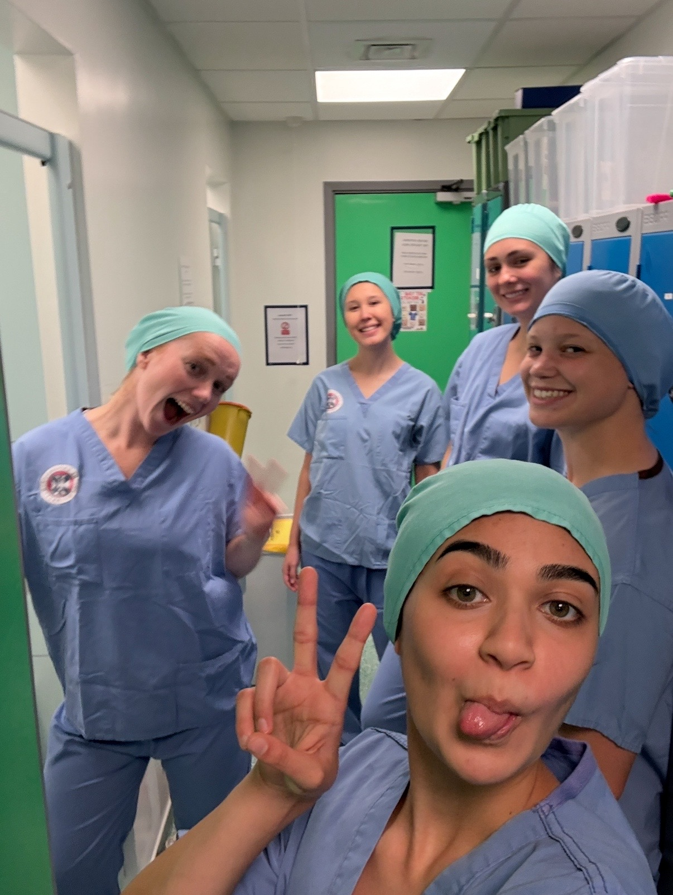
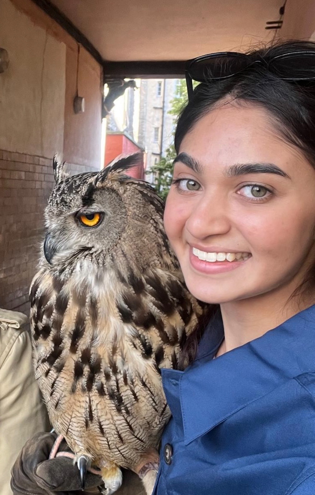
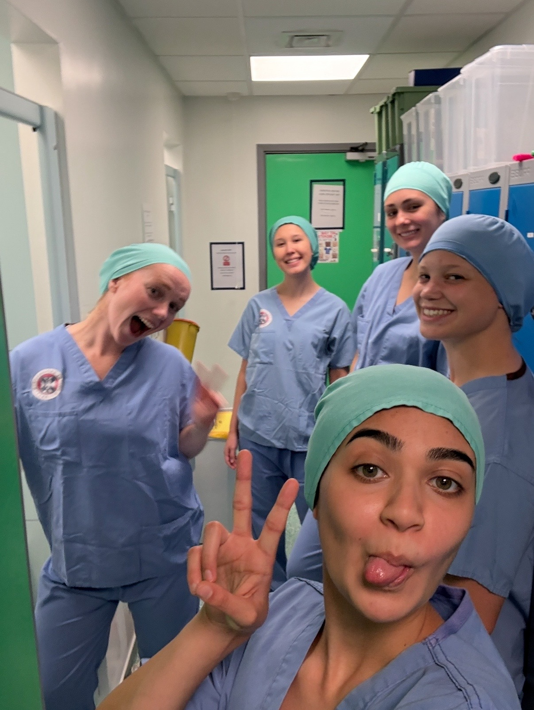
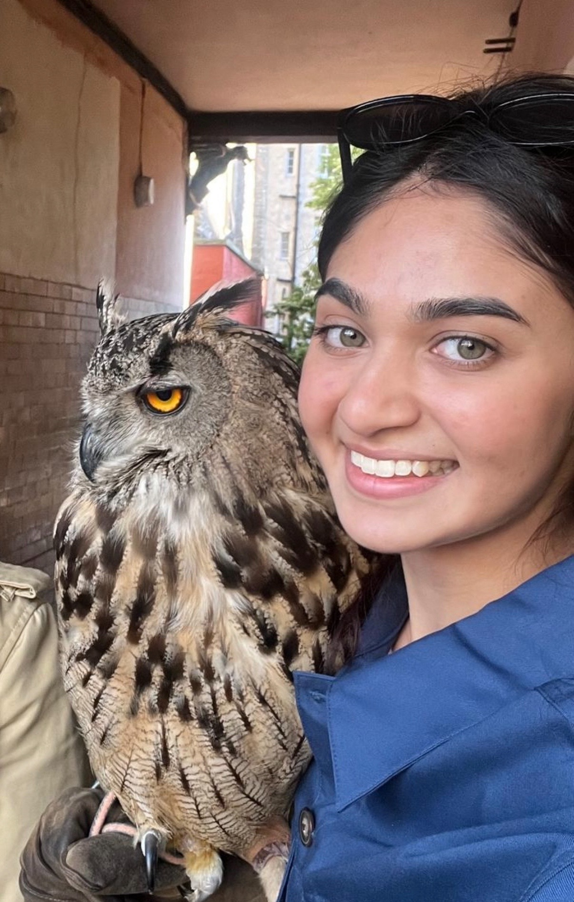
 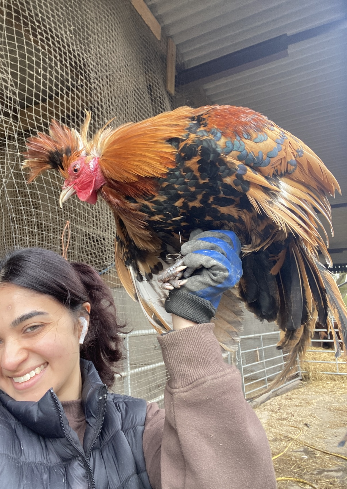
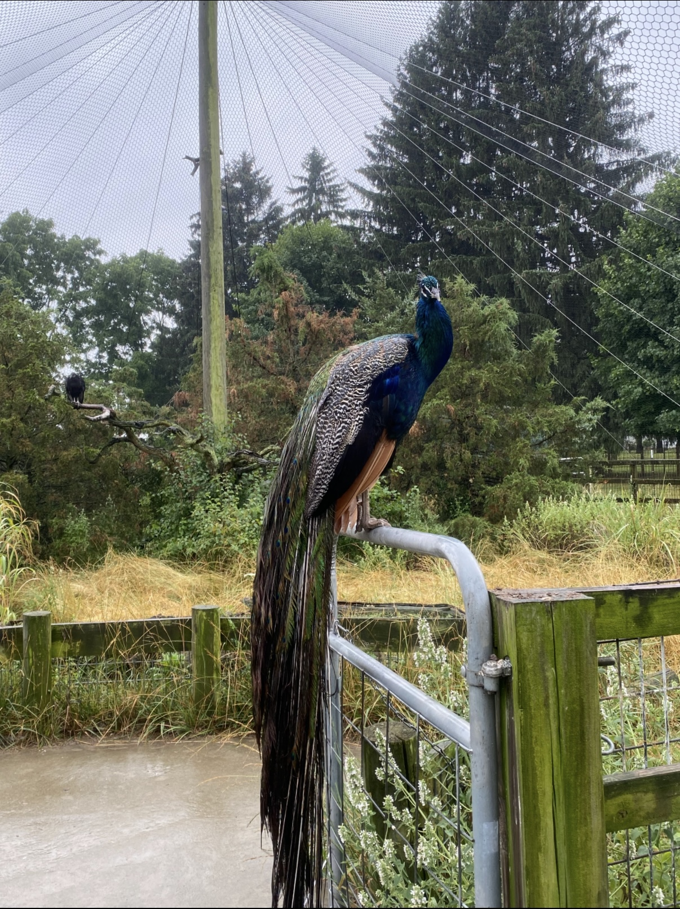
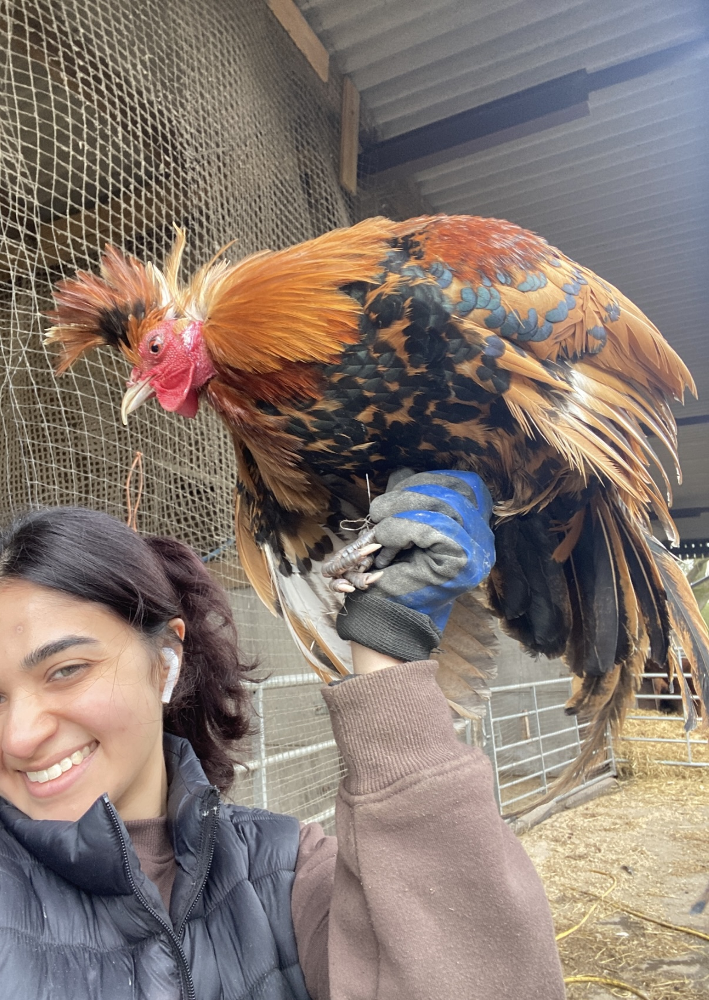
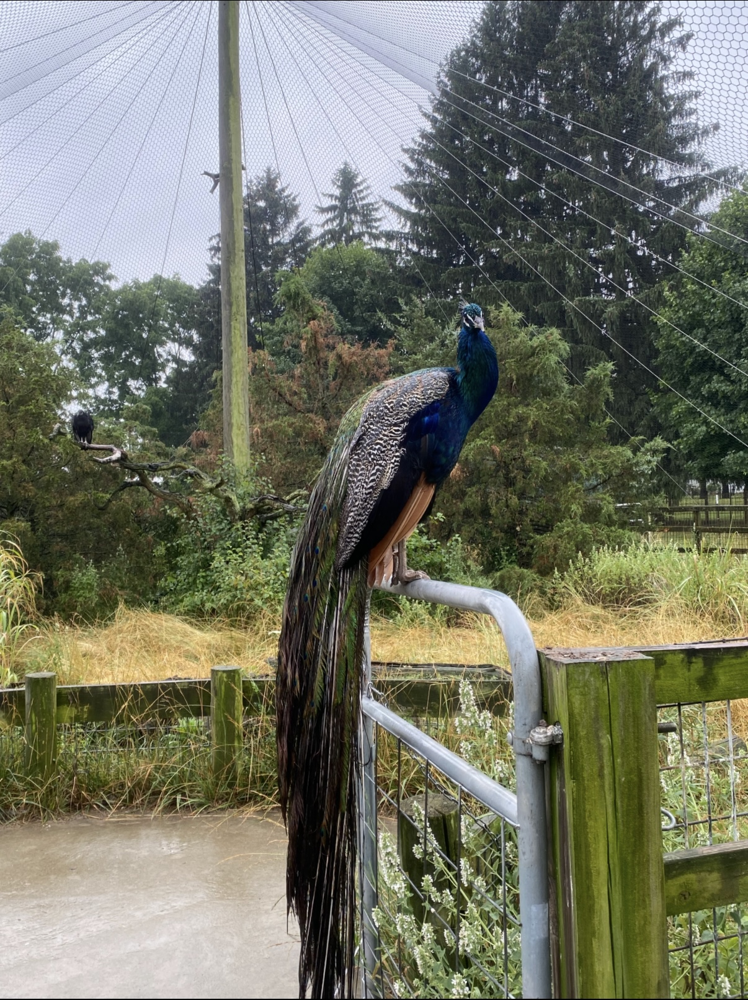
 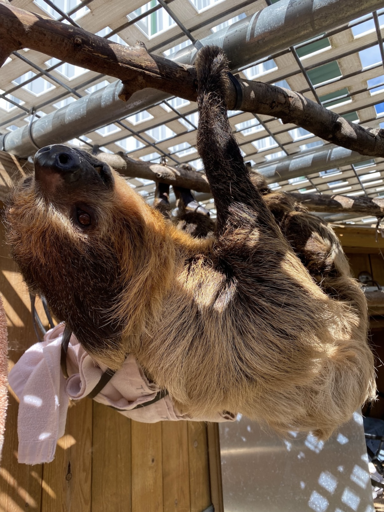
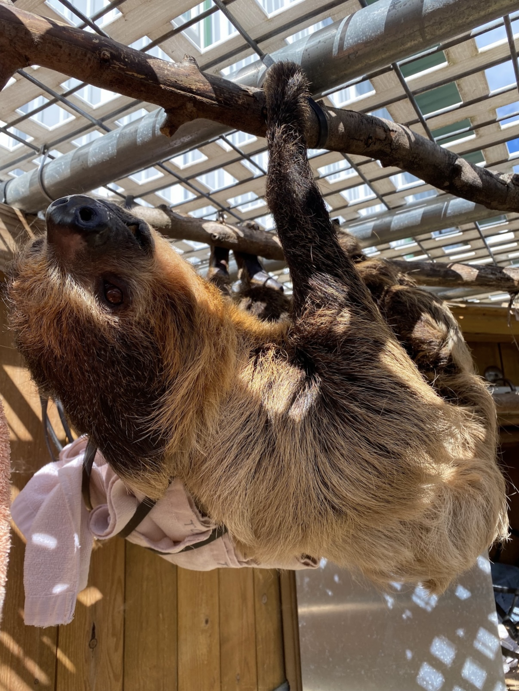
 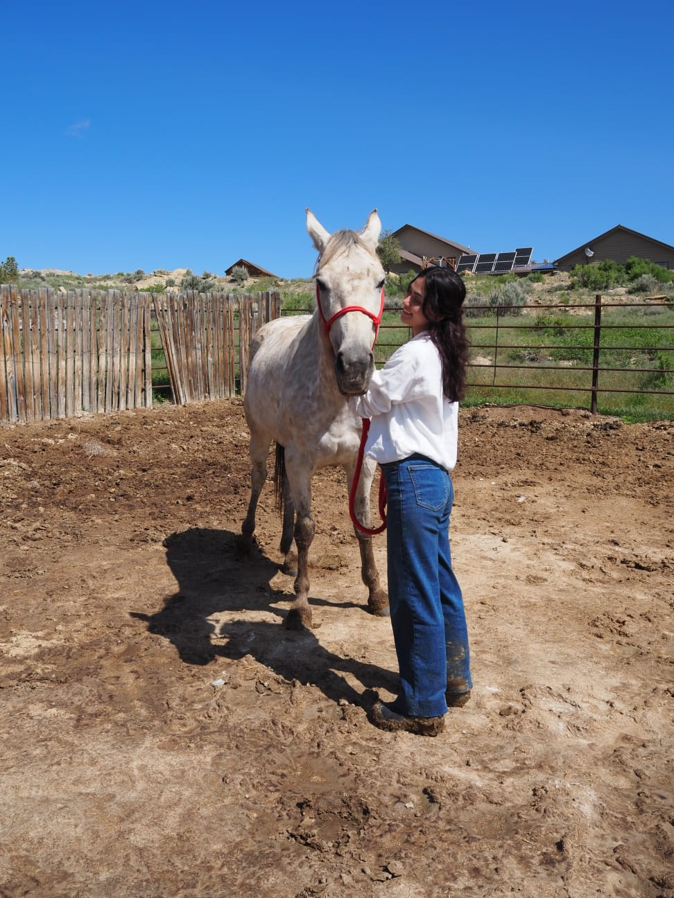
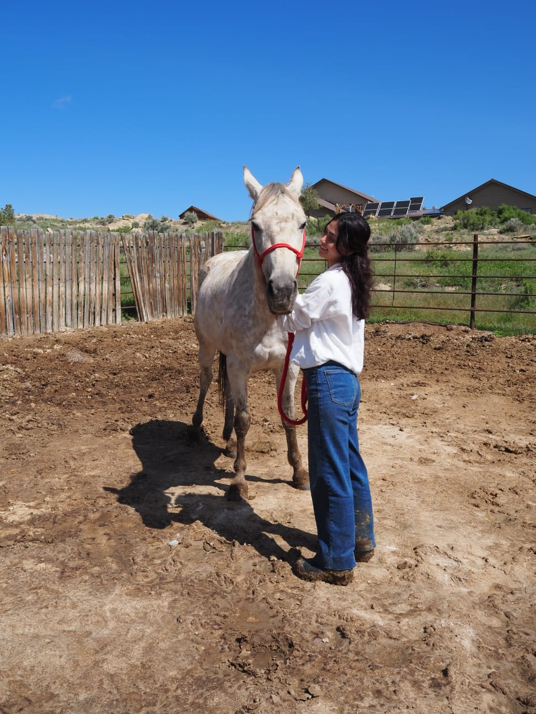
 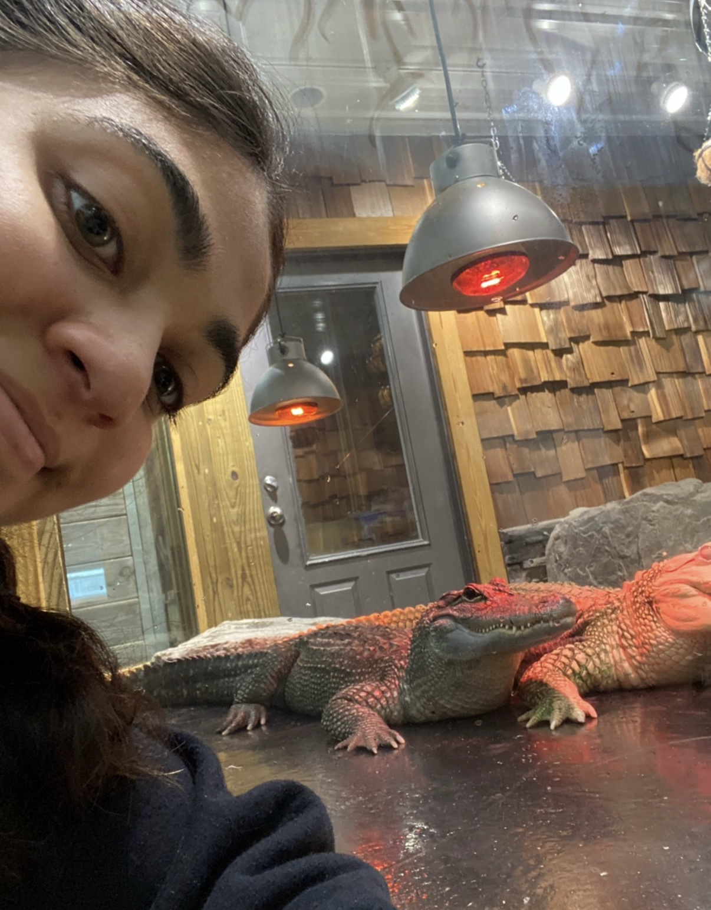
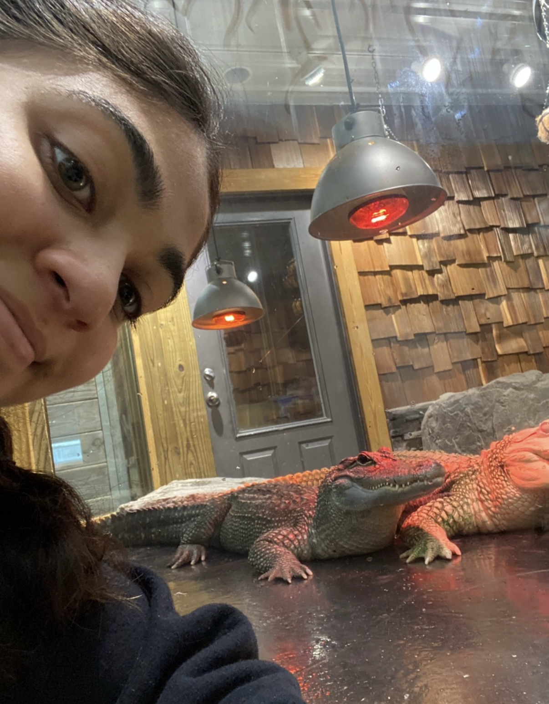